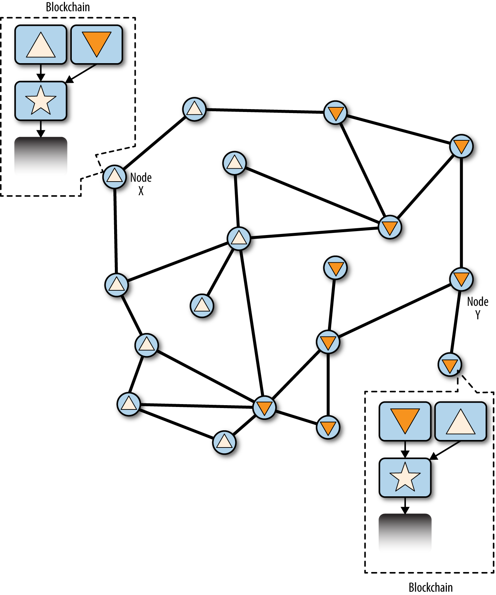

Mining and Consensus
Introduction
The word "mining" is somewhat misleading. By evoking the extraction of precious metals, it focuses our attention on the reward for mining, the new bitcoin created in each block. Although mining is incentivized by this reward, the primary purpose of mining is not the reward or the generation of new coins. If you view mining only as the process by which coins are created, you are mistaking the means (incentives) as the goal of the process. Mining is the mechanism that underpins the decentralized clearinghouse, by which transactions are validated and cleared. Mining is the invention that makes bitcoin special, a decentralized security mechanism that is the basis for P2P digital cash.
Mining secures the bitcoin system and enables the emergence of network-wide consensus without a central authority. The reward of newly minted coins and transaction fees is an incentive scheme that aligns the actions of miners with the security of the network, while simultaneously implementing the monetary supply.
|
Tip
|
The purpose of mining is not the creation of new bitcoin. That’s the incentive system. Mining is the mechanism by which bitcoin’s security is decentralized. |
Miners validate new transactions and record them on the global ledger. A new block, containing transactions that occurred since the last block, is "mined" every 10 minutes on average, thereby adding those transactions to the blockchain. Transactions that become part of a block and added to the blockchain are considered "confirmed," which allows the new owners of bitcoin to spend the bitcoin they received in those transactions.
Miners receive two types of rewards in return for the security provided by mining: new coins created with each new block, and transaction fees from all the transactions included in the block. To earn this reward, miners compete to solve a difficult mathematical problem based on a cryptographic hash algorithm. The solution to the problem, called the Proof-of-Work, is included in the new block and acts as proof that the miner expended significant computing effort. The competition to solve the Proof-of-Work algorithm to earn the reward and the right to record transactions on the blockchain is the basis for bitcoin’s security model.
The process is called mining because the reward (new coin generation) is designed to simulate diminishing returns, just like mining for precious metals. Bitcoin’s money supply is created through mining, similar to how a central bank issues new money by printing bank notes. The maximum amount of newly created bitcoin a miner can add to a block decreases approximately every four years (or precisely every 210,000 blocks). It started at 50 bitcoin per block in January of 2009 and halved to 25 bitcoin per block in November of 2012. It halved again to 12.5 bitcoin in July 2016. Based on this formula, bitcoin mining rewards decrease exponentially until approximately the year 2140, when all bitcoin (20.99999998 million) will have been issued. After 2140, no new bitcoin will be issued.
Bitcoin miners also earn fees from transactions. Every transaction may include a transaction fee, in the form of a surplus of bitcoin between the transaction’s inputs and outputs. The winning bitcoin miner gets to "keep the change" on the transactions included in the winning block. Today, the fees represent 0.5% or less of a bitcoin miner’s income, the vast majority coming from the newly minted bitcoin. However, as the reward decreases over time and the number of transactions per block increases, a greater proportion of bitcoin mining earnings will come from fees. Gradually, the mining reward will be dominated by transaction fees, which will form the primary incentive for miners. After 2140, the amount of new bitcoin in each block drops to zero and bitcoin mining will be incentivized only by transaction fees.
In this chapter, we will first examine mining as a monetary supply mechanism and then look at the most important function of mining: the decentralized consensus mechanism that underpins bitcoin’s security.
To understand mining and consensus, we will follow Alice’s transaction as it is received and added to a block by Jing’s mining equipment. Then we will follow the block as it is mined, added to the blockchain, and accepted by the bitcoin network through the process of emergent consensus.
Bitcoin Economics and Currency Creation
Bitcoin are "minted" during the creation of each block at a fixed and diminishing rate. Each block, generated on average every 10 minutes, contains entirely new bitcoin, created from nothing. Every 210,000 blocks, or approximately every four years, the currency issuance rate is decreased by 50%. For the first four years of operation of the network, each block contained 50 new bitcoin.
In November 2012, the new bitcoin issuance rate was decreased to 25 bitcoin per block. In July of 2016 it was decreased again to 12.5 bitcoin per block. It will halve again to 6.25 bitcoin at block 630,000, which will be mined sometime in 2020. The rate of new coins decreases like this exponentially over 32 "halvings" until block 6,720,000 (mined approximately in year 2137), when it reaches the minimum currency unit of 1 satoshi. Finally, after 6.93 million blocks, in approximately 2140, almost 2,099,999,997,690,000 satoshis, or almost 21 million bitcoin, will be issued. Thereafter, blocks will contain no new bitcoin, and miners will be rewarded solely through the transaction fees. Supply of bitcoin currency over time based on a geometrically decreasing issuance rate shows the total bitcoin in circulation over time, as the issuance of currency decreases.
Figure 1. Supply of bitcoin currency over time based on a geometrically decreasing issuance rate
|
Note
|
The maximum number of coins mined is the upper limit of possible mining rewards for bitcoin. In practice, a miner may intentionally mine a block taking less than the full reward. Such blocks have already been mined and more may be mined in the future, resulting in a lower total issuance of the currency. |
In the example code in A script for calculating how much total bitcoin will be issued, we calculate the total amount of bitcoin that will be issued.
Example 1. A script for calculating how much total bitcoin will be issued
link:code/max_money.py[]Running the max_money.py script shows the output produced by running this script.
Example 2. Running the max_money.py script
$ python max_money.py
Total BTC to ever be created: 2099999997690000 SatoshisThe finite and diminishing issuance creates a fixed monetary supply that resists inflation. Unlike a fiat currency, which can be printed in infinite numbers by a central bank, bitcoin can never be inflated by printing.
Decentralized Consensus
In the previous chapter we looked at the blockchain, the global public ledger (list) of all transactions, which everyone in the bitcoin network accepts as the authoritative record of ownership.
But how can everyone in the network agree on a single universal "truth" about who owns what, without having to trust anyone? All traditional payment systems depend on a trust model that has a central authority providing a clearinghouse service, basically verifying and clearing all transactions. Bitcoin has no central authority, yet somehow every full node has a complete copy of a public ledger that it can trust as the authoritative record. The blockchain is not created by a central authority, but is assembled independently by every node in the network. Somehow, every node in the network, acting on information transmitted across insecure network connections, can arrive at the same conclusion and assemble a copy of the same public ledger as everyone else. This chapter examines the process by which the bitcoin network achieves global consensus without central authority.
Satoshi Nakamoto’s main invention is the decentralized mechanism for emergent consensus. Emergent, because consensus is not achieved explicitly—there is no election or fixed moment when consensus occurs. Instead, consensus is an emergent artifact of the asynchronous interaction of thousands of independent nodes, all following simple rules. All the properties of bitcoin, including currency, transactions, payments, and the security model that does not depend on central authority or trust, derive from this invention.
Bitcoin’s decentralized consensus emerges from the interplay of four processes that occur independently on nodes across the network:
-
Independent verification of each transaction, by every full node, based on a comprehensive list of criteria
-
Independent aggregation of those transactions into new blocks by mining nodes, coupled with demonstrated computation through a Proof-of-Work algorithm
-
Independent verification of the new blocks by every node and assembly into a chain
-
Independent selection, by every node, of the chain with the most cumulative computation demonstrated through Proof-of-Work
In the next few sections we will examine these processes and how they interact to create the emergent property of network-wide consensus that allows any bitcoin node to assemble its own copy of the authoritative, trusted, public, global ledger.
Independent Verification of Transactions
In [transactions], we saw how wallet software creates transactions by collecting UTXO, providing the appropriate unlocking scripts, and then constructing new outputs assigned to a new owner. The resulting transaction is then sent to the neighboring nodes in the bitcoin network so that it can be propagated across the entire bitcoin network.
However, before forwarding transactions to its neighbors, every bitcoin node that receives a transaction will first verify the transaction. This ensures that only valid transactions are propagated across the network, while invalid transactions are discarded at the first node that encounters them.
Each node verifies every transaction against a long checklist of criteria:
-
The transaction’s syntax and data structure must be correct.
-
Neither lists of inputs or outputs are empty.
-
The transaction size in bytes is less than MAX_BLOCK_SIZE.
-
Each output value, as well as the total, must be within the allowed range of values (less than 21m coins, more than the dust threshold).
-
None of the inputs have hash=0, N=–1 (coinbase transactions should not be relayed).
-
nLocktime is equal to INT_MAX, or nLocktime and nSequence values are satisfied according to MedianTimePast.
-
The transaction size in bytes is greater than or equal to 100.
-
The number of signature operations (SIGOPS) contained in the transaction is less than the signature operation limit.
-
The unlocking script (scriptSig) can only push numbers on the stack, and the locking script (scriptPubkey) must match IsStandard forms (this rejects "nonstandard" transactions).
-
A matching transaction in the pool, or in a block in the main branch, must exist.
-
For each input, if the referenced output exists in any other transaction in the pool, the transaction must be rejected.
-
For each input, look in the main branch and the transaction pool to find the referenced output transaction. If the output transaction is missing for any input, this will be an orphan transaction. Add to the orphan transactions pool, if a matching transaction is not already in the pool.
-
For each input, if the referenced output transaction is a coinbase output, it must have at least COINBASE_MATURITY (100) confirmations.
-
For each input, the referenced output must exist and cannot already be spent.
-
Using the referenced output transactions to get input values, check that each input value, as well as the sum, are in the allowed range of values (less than 21m coins, more than 0).
-
Reject if the sum of input values is less than sum of output values.
-
Reject if transaction fee would be too low (minRelayTxFee) to get into an empty block.
-
The unlocking scripts for each input must validate against the corresponding output locking scripts.
These conditions can be seen in detail in the functions AcceptToMemoryPool, CheckTransaction, and CheckInputs in Bitcoin Core. Note that the conditions change over time, to address new types of denial-of-service attacks or sometimes to relax the rules so as to include more types of transactions.
By independently verifying each transaction as it is received and before propagating it, every node builds a pool of valid (but unconfirmed) transactions known as the transaction pool, memory pool, or mempool.
Mining Nodes
Some of the nodes on the bitcoin network are specialized nodes called miners. In [ch01_intro_what_is_bitcoin] we introduced Jing, a computer engineering student in Shanghai, China, who is a bitcoin miner. Jing earns bitcoin by running a "mining rig," which is a specialized computer-hardware system designed to mine bitcoin. Jing’s specialized mining hardware is connected to a server running a full bitcoin node. Unlike Jing, some miners mine without a full node, as we will see in Mining Pools. Like every other full node, Jing’s node receives and propagates unconfirmed transactions on the bitcoin network. Jing’s node, however, also aggregates these transactions into new blocks.
Jing’s node is listening for new blocks, propagated on the bitcoin network, as do all nodes. However, the arrival of a new block has special significance for a mining node. The competition among miners effectively ends with the propagation of a new block that acts as an announcement of a winner. To miners, receiving a valid new block means someone else won the competition and they lost. However, the end of one round of a competition is also the beginning of the next round. The new block is not just a checkered flag, marking the end of the race; it is also the starting pistol in the race for the next block.
Aggregating Transactions into Blocks
After validating transactions, a bitcoin node will add them to the memory pool, or transaction pool, where transactions await until they can be included (mined) into a block. Jing’s node collects, validates, and relays new transactions just like any other node. Unlike other nodes, however, Jing’s node will then aggregate these transactions into a candidate block.
Let’s follow the blocks that were created during the time Alice bought a cup of coffee from Bob’s Cafe (see [cup_of_coffee]). Alice’s transaction was included in block 277,316. For the purpose of demonstrating the concepts in this chapter, let’s assume that block was mined by Jing’s mining system and follows Alice’s transaction as it becomes part of this new block.
Jing’s mining node maintains a local copy of the blockchain. By the time Alice buys the cup of coffee, Jing’s node has assembled a chain up to block 277,314. Jing’s node is listening for transactions, trying to mine a new block and also listening for blocks discovered by other nodes. As Jing’s node is mining, it receives block 277,315 through the bitcoin network. The arrival of this block signifies the end of the competition for block 277,315 and the beginning of the competition to create block 277,316.
During the previous 10 minutes, while Jing’s node was searching for a solution to block 277,315, it was also collecting transactions in preparation for the next block. By now it has collected a few hundred transactions in the memory pool. Upon receiving block 277,315 and validating it, Jing’s node will also compare it against all the transactions in the memory pool and remove any that were included in block 277,315. Whatever transactions remain in the memory pool are unconfirmed and are waiting to be recorded in a new block.
Jing’s node immediately constructs a new empty block, a candidate for block 277,316. This block is called a candidate block because it is not yet a valid block, as it does not contain a valid Proof-of-Work. The block becomes valid only if the miner succeeds in finding a solution to the Proof-of-Work algorithm.
When Jing’s node aggregates all the transactions from the memory pool, the new candidate block has 418 transactions with total transaction fees of 0.09094928 bitcoin. You can see this block in the blockchain using the Bitcoin Core client command-line interface, as shown in Using the command line to retrieve block 277,316.
Example 3. Using the command line to retrieve block 277,316
$ bitcoin-cli getblockhash 277316
0000000000000001b6b9a13b095e96db41c4a928b97ef2d944a9b31b2cc7bdc4
$ bitcoin-cli getblock 0000000000000001b6b9a13b095e96db41c4a928b97ef2d9\
44a9b31b2cc7bdc4{
"hash" : "0000000000000001b6b9a13b095e96db41c4a928b97ef2d944a9b31b2cc7bdc4",
"confirmations" : 35561,
"size" : 218629,
"height" : 277316,
"version" : 2,
"merkleroot" : "c91c008c26e50763e9f548bb8b2fc323735f73577effbc55502c51eb4cc7cf2e",
"tx" : [
"d5ada064c6417ca25c4308bd158c34b77e1c0eca2a73cda16c737e7424afba2f",
"b268b45c59b39d759614757718b9918caf0ba9d97c56f3b91956ff877c503fbe",
... 417 more transactions ...
],
"time" : 1388185914,
"nonce" : 924591752,
"bits" : "1903a30c",
"difficulty" : 1180923195.25802612,
"chainwork" : "000000000000000000000000000000000000000000000934695e92aaf53afa1a",
"previousblockhash" : "0000000000000002a7bbd25a417c0374cc55261021e8a9ca74442b01284f0569"
}The Coinbase Transaction
The first transaction in any block is a special transaction, called a coinbase transaction. This transaction is constructed by Jing’s node and contains his reward for the mining effort.
|
Note
|
When block 277,316 was mined, the reward was 25 bitcoin per block. Since then, one "halving" period has elapsed. The block reward changed to 12.5 bitcoin in July 2016. It will be halved again in 210,000 blocks, in the year 2020. |
Jing’s node creates the coinbase transaction as a payment to his own wallet: "Pay Jing’s address 25.09094928 bitcoin." The total amount of reward that Jing collects for mining a block is the sum of the coinbase reward (25 new bitcoin) and the transaction fees (0.09094928) from all the transactions included in the block as shown in Coinbase transaction.
Example 4. Coinbase transaction
$ bitcoin-cli getrawtransaction d5ada064c6417ca25c4308bd158c34b77e1c0eca2a73cda16c737e7424afba2f 1
{
"hex" : "01000000010000000000000000000000000000000000000000000000000000000000000000ffffffff0f03443b0403858402062f503253482fffffffff0110c08d9500000000232102aa970c592640d19de03ff6f329d6fd2eecb023263b9ba5d1b81c29b523da8b21ac00000000",
"txid" : "d5ada064c6417ca25c4308bd158c34b77e1c0eca2a73cda16c737e7424afba2f",
"version" : 1,
"locktime" : 0,
"vin" : [
{
"coinbase" : "03443b0403858402062f503253482f",
"sequence" : 4294967295
}
],
"vout" : [
{
"value" : 25.09094928,
"n" : 0,
"scriptPubKey" : {
"asm" : "02aa970c592640d19de03ff6f329d6fd2eecb023263b9ba5d1b81c29b523da8b21OP_CHECKSIG",
"hex" : "2102aa970c592640d19de03ff6f329d6fd2eecb023263b9ba5d1b81c29b523da8b21ac",
"reqSigs" : 1,
"type" : "pubkey",
"addresses" : [
"1MxTkeEP2PmHSMze5tUZ1hAV3YTKu2Gh1N"
]
}
}
]
}Unlike regular transactions, the coinbase transaction does not consume (spend) UTXO as inputs. Instead, it has only one input, called the coinbase, which creates bitcoin from nothing. The coinbase transaction has one output, payable to the miner’s own bitcoin address. The output of the coinbase transaction sends the value of 25.09094928 bitcoin to the miner’s bitcoin address; in this case it is 1MxTkeEP2PmHSMze5tUZ1hAV3YTKu2Gh1N.
Coinbase Reward and Fees
To construct the coinbase transaction, Jing’s node first calculates the total amount of transaction fees by adding all the inputs and outputs of the 418 transactions that were added to the block. The fees are calculated as:
Total Fees = Sum(Inputs) - Sum(Outputs)
In block 277,316, the total transaction fees are 0.09094928 bitcoin.
Next, Jing’s node calculates the correct reward for the new block. The reward is calculated based on the block height, starting at 50 bitcoin per block and reduced by half every 210,000 blocks. Because this block is at height 277,316, the correct reward is 25 bitcoin.
The calculation can be seen in function GetBlockSubsidy in the Bitcoin Core client, as shown in Calculating the block reward—Function GetBlockSubsidy, Bitcoin Core Client, main.cpp.
Example 5. Calculating the block reward—Function GetBlockSubsidy, Bitcoin Core Client, main.cpp
CAmount GetBlockSubsidy(int nHeight, const Consensus::Params& consensusParams)
{
int halvings = nHeight / consensusParams.nSubsidyHalvingInterval;
// Force block reward to zero when right shift is undefined.
if (halvings >= 64)
return 0;
CAmount nSubsidy = 50 * COIN;
// Subsidy is cut in half every 210,000 blocks which will occur approximately every 4 years.
nSubsidy >>= halvings;
return nSubsidy;
}The initial subsidy is calculated in satoshis by multiplying 50 with the COIN constant (100,000,000 satoshis). This sets the initial reward (nSubsidy) at 5 billion satoshis.
Next, the function calculates the number of halvings that have occurred by dividing the current block height by the halving interval (SubsidyHalvingInterval). In the case of block 277,316, with a halving interval every 210,000 blocks, the result is 1 halving.
The maximum number of halvings allowed is 64, so the code imposes a zero reward (returns only the fees) if the 64 halvings is exceeded.
Next, the function uses the binary-right-shift operator to divide the reward (nSubsidy) by two for each round of halving. In the case of block 277,316, this would binary-right-shift the reward of 5 billion satoshis once (one halving) and result in 2.5 billion satoshis, or 25 bitcoins. The binary-right-shift operator is used because it is more efficient than multiple repeated divisions. To avoid a potential bug, the shift operation is skipped after 63 halvings, and the subsidy is set to 0.
Finally, the coinbase reward (nSubsidy) is added to the transaction fees (nFees), and the sum is returned.
|
Tip
|
If Jing’s mining node writes the coinbase transaction, what stops Jing from "rewarding" himself 100 or 1000 bitcoin? The answer is that an incorrect reward would result in the block being deemed invalid by everyone else, wasting Jing’s electricity used for Proof-of-Work. Jing only gets to spend the reward if the block is accepted by everyone. |
Structure of the Coinbase Transaction
With these calculations, Jing’s node then constructs the coinbase transaction to pay himself 25.09094928 bitcoin.
As you can see in Coinbase transaction, the coinbase transaction has a special format. Instead of a transaction input specifying a previous UTXO to spend, it has a "coinbase" input. We examined transaction inputs in [tx_in_structure]. Let’s compare a regular transaction input with a coinbase transaction input. The structure of a "normal" transaction input shows the structure of a regular transaction, while The structure of a coinbase transaction input shows the structure of the coinbase transaction’s input.
| Size | Field | Description |
|---|---|---|
32 bytes |
Transaction Hash |
Pointer to the transaction containing the UTXO to be spent |
4 bytes |
Output Index |
The index number of the UTXO to be spent, first one is 0 |
1–9 bytes (VarInt) |
Unlocking-Script Size |
Unlocking-Script length in bytes, to follow |
Variable |
Unlocking-Script |
A script that fulfills the conditions of the UTXO locking script |
4 bytes |
Sequence Number |
Usually set to 0xFFFFFFFF to opt out of BIP 125 and BIP 68 |
| Size | Field | Description |
|---|---|---|
32 bytes |
Transaction Hash |
All bits are zero: Not a transaction hash reference |
4 bytes |
Output Index |
All bits are ones: 0xFFFFFFFF |
1–9 bytes (VarInt) |
Coinbase Data Size |
Length of the coinbase data, from 2 to 100 bytes |
Variable |
Coinbase Data |
Arbitrary data used for extra nonce and mining tags. In v2 blocks; must begin with block height |
4 bytes |
Sequence Number |
Set to 0xFFFFFFFF |
In a coinbase transaction, the first two fields are set to values that do not represent a UTXO reference. Instead of a "transaction hash," the first field is filled with 32 bytes all set to zero. The "output index" is filled with 4 bytes all set to 0xFF (255 decimal). The "Unlocking Script" (scriptSig) is replaced by coinbase data, a data field used by the miners, as we will see next.
Coinbase Data
Coinbase transactions do not have an unlocking script (aka, scriptSig) field. Instead, this field is replaced by coinbase data, which must be between 2 and 100 bytes. Except for the first few bytes, the rest of the coinbase data can be used by miners in any way they want; it is arbitrary data.
In the genesis block, for example, Satoshi Nakamoto added the text "The Times 03/Jan/2009 Chancellor on brink of second bailout for banks" in the coinbase data, using it as a proof of the date and to convey a message. Currently, miners use the coinbase data to include extra nonce values and strings identifying the mining pool.
The first few bytes of the coinbase used to be arbitrary, but that is no longer the case. As per BIP-34, version-2 blocks (blocks with the version field set to 2) must contain the block height index as a script "push" operation in the beginning of the coinbase field.
In block 277,316 we see that the coinbase (see Coinbase transaction), which is in the unlocking script or scriptSig field of the transaction input, contains the hexadecimal value 03443b0403858402062f503253482f. Let’s decode this value.
The first byte, 03, instructs the script execution engine to push the next three bytes onto the script stack (see [tx_script_ops_table_pushdata]). The next three bytes, 0x443b04, are the block height encoded in little-endian format (backward, least-significant byte first). Reverse the order of the bytes and the result is 0x043b44, which is 277,316 in decimal.
The next few hexadecimal digits (0385840206) are used to encode an extra nonce (see The Extra Nonce Solution), or random value, used to find a suitable Proof-of-Work solution.
The final part of the coinbase data (2f503253482f) is the ASCII-encoded string /P2SH/, which indicates that the mining node that mined this block supports the P2SH improvement defined in BIP-16. The introduction of the P2SH capability required signaling by miners to endorse either BIP-16 or BIP-17. Those endorsing the BIP-16 implementation were to include /P2SH/ in their coinbase data. Those endorsing the BIP-17 implementation of P2SH were to include the string p2sh/CHV in their coinbase data. The BIP-16 was elected as the winner, and many miners continued including the string /P2SH/ in their coinbase to indicate support for this feature.
Extract the coinbase data from the genesis block uses the libbitcoin library introduced in [alt_libraries] to extract the coinbase data from the genesis block, displaying Satoshi’s message. Note that the libbitcoin library contains a static copy of the genesis block, so the example code can retrieve the genesis block directly from the library.
Example 6. Extract the coinbase data from the genesis block
link:code/satoshi-words.cpp[]We compile the code with the GNU C++ compiler and run the resulting executable, as shown in Compiling and running the satoshi-words example code.
Example 7. Compiling and running the satoshi-words example code
$ # Compile the code
$ g++ -o satoshi-words satoshi-words.cpp $(pkg-config --cflags --libs libbitcoin)
$ # Run the executable
$ ./satoshi-words
^D��<GS>^A^DEThe Times 03/Jan/2009 Chancellor on brink of second bailout for banksConstructing the Block Header
To construct the block header, the mining node needs to fill in six fields, as listed in The structure of the block header.
| Size | Field | Description |
|---|---|---|
4 bytes |
Version |
A version number to track software/protocol upgrades |
32 bytes |
Previous Block Hash |
A reference to the hash of the previous (parent) block in the chain |
32 bytes |
Merkle Root |
A hash of the root of the merkle tree of this block’s transactions |
4 bytes |
Timestamp |
The approximate creation time of this block (seconds from Unix Epoch) |
4 bytes |
Target |
The Proof-of-Work algorithm target for this block |
4 bytes |
Nonce |
A counter used for the Proof-of-Work algorithm |
At the time that block 277,316 was mined, the version number describing the block structure is version 2, which is encoded in little-endian format in 4 bytes as 0x02000000.
Next, the mining node needs to add the "Previous Block Hash" (also known as prevhash). That is the hash of the block header of block 277,315, the previous block received from the network, which Jing’s node has accepted and selected as the parent of the candidate block 277,316. The block header hash for block 277,315 is:
0000000000000002a7bbd25a417c0374cc55261021e8a9ca74442b01284f0569
|
Tip
|
By selecting the specific parent block, indicated by the Previous Block Hash field in the candidate block header, Jing is committing his mining power to extending the chain that ends in that specific block. In essence, this is how Jing "votes" with his mining power for the longest-difficulty valid chain. |
The next step is to summarize all the transactions with a merkle tree, in order to add the merkle root to the block header. The coinbase transaction is listed as the first transaction in the block. Then, 418 more transactions are added after it, for a total of 419 transactions in the block. As we saw in the [merkle_trees], there must be an even number of "leaf" nodes in the tree, so the last transaction is duplicated, creating 420 nodes, each containing the hash of one transaction. The transaction hashes are then combined, in pairs, creating each level of the tree, until all the transactions are summarized into one node at the "root" of the tree. The root of the merkle tree summarizes all the transactions into a single 32-byte value, which you can see listed as "merkle root" in Using the command line to retrieve block 277,316, and here:
c91c008c26e50763e9f548bb8b2fc323735f73577effbc55502c51eb4cc7cf2e
Jing’s mining node will then add a 4-byte timestamp, encoded as a Unix "epoch" timestamp, which is based on the number of seconds elapsed since midnight UTC, Thursday, January 1, 1970. The time 1388185914 is equal to Friday, December 27, 2013, 23:11:54 UTC.
Jing’s node then fills in the target, which defines the required Proof-of-Work to make this a valid block. The target is stored in the block as a "target bits" metric, which is a mantissa-exponent encoding of the target. The encoding has a 1-byte exponent, followed by a 3-byte mantissa (coefficient). In block 277,316, for example, the target bits value is 0x1903a30c. The first part 0x19 is a hexadecimal exponent, while the next part, 0x03a30c, is the coefficient. The concept of a target is explained in Retargeting to Adjust Difficulty and the "target bits" representation is explained in Target Representation.
The final field is the nonce, which is initialized to zero.
With all the other fields filled, the block header is now complete and the process of mining can begin. The goal is now to find a value for the nonce that results in a block header hash that is less than the target. The mining node will need to test billions or trillions of nonce values before a nonce is found that satisfies the requirement.
Mining the Block
Now that a candidate block has been constructed by Jing’s node, it is time for Jing’s hardware mining rig to "mine" the block, to find a solution to the Proof-of-Work algorithm that makes the block valid. Throughout this book we have studied cryptographic hash functions as used in various aspects of the bitcoin system. The hash function SHA256 is the function used in bitcoin’s mining process.
In the simplest terms, mining is the process of hashing the block header repeatedly, changing one parameter, until the resulting hash matches a specific target. The hash function’s result cannot be determined in advance, nor can a pattern be created that will produce a specific hash value. This feature of hash functions means that the only way to produce a hash result matching a specific target is to try again and again, randomly modifying the input until the desired hash result appears by chance.
Proof-of-Work Algorithm
A hash algorithm takes an arbitrary-length data input and produces a fixed-length deterministic result, a digital fingerprint of the input. For any specific input, the resulting hash will always be the same and can be easily calculated and verified by anyone implementing the same hash algorithm. The key characteristic of a cryptographic hash algorithm is that it is computationally infeasible to find two different inputs that produce the same fingerprint (known as a collision). As a corollary, it is also virtually impossible to select an input in such a way as to produce a desired fingerprint, other than trying random inputs.
With SHA256, the output is always 256 bits long, regardless of the size of the input. In SHA256 example, we will use the Python interpreter to calculate the SHA256 hash of the phrase, "I am Satoshi Nakamoto."
Example 8. SHA256 example
$ pythonPython 2.7.1
>>> import hashlib
>>> print hashlib.sha256("I am Satoshi Nakamoto").hexdigest()
5d7c7ba21cbbcd75d14800b100252d5b428e5b1213d27c385bc141ca6b47989eSHA256 example shows the result of calculating the hash of "I am Satoshi Nakamoto": 5d7c7ba21cbbcd75d14800b100252d5b428e5b1213d27c385bc141ca6b47989e. This 256-bit number is the hash or digest of the phrase and depends on every part of the phrase. Adding a single letter, punctuation mark, or any other character will produce a different hash.
Now, if we change the phrase, we should expect to see completely different hashes. Let’s try that by adding a number to the end of our phrase, using the simple Python scripting in SHA256 script for generating many hashes by iterating on a nonce.
Example 9. SHA256 script for generating many hashes by iterating on a nonce
link:code/hash_example.py[]Running this will produce the hashes of several phrases, made different by adding a number at the end of the text. By incrementing the number, we can get different hashes, as shown in SHA256 output of a script for generating many hashes by iterating on a nonce.
Example 10. SHA256 output of a script for generating many hashes by iterating on a nonce
$ python hash_example.pyI am Satoshi Nakamoto0 => a80a81401765c8eddee25df36728d732... I am Satoshi Nakamoto1 => f7bc9a6304a4647bb41241a677b5345f... I am Satoshi Nakamoto2 => ea758a8134b115298a1583ffb80ae629... I am Satoshi Nakamoto3 => bfa9779618ff072c903d773de30c99bd... I am Satoshi Nakamoto4 => bce8564de9a83c18c31944a66bde992f... I am Satoshi Nakamoto5 => eb362c3cf3479be0a97a20163589038e... I am Satoshi Nakamoto6 => 4a2fd48e3be420d0d28e202360cfbaba... I am Satoshi Nakamoto7 => 790b5a1349a5f2b909bf74d0d166b17a... I am Satoshi Nakamoto8 => 702c45e5b15aa54b625d68dd947f1597... I am Satoshi Nakamoto9 => 7007cf7dd40f5e933cd89fff5b791ff0... I am Satoshi Nakamoto10 => c2f38c81992f4614206a21537bd634a... I am Satoshi Nakamoto11 => 7045da6ed8a914690f087690e1e8d66... I am Satoshi Nakamoto12 => 60f01db30c1a0d4cbce2b4b22e88b9b... I am Satoshi Nakamoto13 => 0ebc56d59a34f5082aaef3d66b37a66... I am Satoshi Nakamoto14 => 27ead1ca85da66981fd9da01a8c6816... I am Satoshi Nakamoto15 => 394809fb809c5f83ce97ab554a2812c... I am Satoshi Nakamoto16 => 8fa4992219df33f50834465d3047429... I am Satoshi Nakamoto17 => dca9b8b4f8d8e1521fa4eaa46f4f0cd... I am Satoshi Nakamoto18 => 9989a401b2a3a318b01e9ca9a22b0f3... I am Satoshi Nakamoto19 => cda56022ecb5b67b2bc93a2d764e75f...
Each phrase produces a completely different hash result. They seem completely random, but you can reproduce the exact results in this example on any computer with Python and see the same exact hashes.
The number used as a variable in such a scenario is called a nonce. The nonce is used to vary the output of a cryptographic function, in this case to vary the SHA256 fingerprint of the phrase.
To make a challenge out of this algorithm, let’s set a target: find a phrase that produces a hexadecimal hash that starts with a zero. Fortunately, this isn’t difficult! SHA256 output of a script for generating many hashes by iterating on a nonce shows that the phrase "I am Satoshi Nakamoto13" produces the hash 0ebc56d59a34f5082aaef3d66b37a661696c2b618e62432727216ba9531041a5, which fits our criteria. It took 13 attempts to find it. In terms of probabilities, if the output of the hash function is evenly distributed we would expect to find a result with a 0 as the hexadecimal prefix once every 16 hashes (one out of 16 hexadecimal digits 0 through F). In numerical terms, that means finding a hash value that is less than 0x1000000000000000000000000000000000000000000000000000000000000000. We call this threshold the target and the goal is to find a hash that is numerically less than the target. If we decrease the target, the task of finding a hash that is less than the target becomes more and more difficult.
To give a simple analogy, imagine a game where players throw a pair of dice repeatedly, trying to throw less than a specified target. In the first round, the target is 12. Unless you throw double-six, you win. In the next round the target is 11. Players must throw 10 or less to win, again an easy task. Let’s say a few rounds later the target is down to 5. Now, more than half the dice throws will exceed the target and therefore be invalid. It takes exponentially more dice throws to win, the lower the target gets. Eventually, when the target is 2 (the minimum possible), only one throw out of every 36, or 2% of them, will produce a winning result.
From the perspective of an observer who knows that the target of the dice game is 2, if someone has succeeded in casting a winning throw it can be assumed that they attempted, on average, 36 throws. In other words, one can estimate the amount of work it takes to succeed from the difficulty imposed by the target. When the algorithm is based on a deterministic function such as SHA256, the input itself constitutes proof that a certain amount of work was done to produce a result below the target. Hence, Proof-of-Work.
|
Tip
|
Even though each attempt produces a random outcome, the probability of any possible outcome can be calculated in advance. Therefore, an outcome of specified difficulty constitutes proof of a specific amount of work. |
In SHA256 output of a script for generating many hashes by iterating on a nonce, the winning "nonce" is 13 and this result can be confirmed by anyone independently. Anyone can add the number 13 as a suffix to the phrase "I am Satoshi Nakamoto" and compute the hash, verifying that it is less than the target. The successful result is also Proof-of-Work, because it proves we did the work to find that nonce. While it only takes one hash computation to verify, it took us 13 hash computations to find a nonce that worked. If we had a lower target (higher difficulty) it would take many more hash computations to find a suitable nonce, but only one hash computation for anyone to verify. Furthermore, by knowing the target, anyone can estimate the difficulty using statistics and therefore know how much work was needed to find such a nonce.
|
Tip
|
The Proof-of-Work must produce a hash that is less than the target. A higher target means it is less difficult to find a hash that is below the target. A lower target means it is more difficult to find a hash below the target. The target and difficulty are inversely related. |
Bitcoin’s Proof-of-Work is very similar to the challenge shown in SHA256 output of a script for generating many hashes by iterating on a nonce. The miner constructs a candidate block filled with transactions. Next, the miner calculates the hash of this block’s header and sees if it is smaller than the current target. If the hash is not less than the target, the miner will modify the nonce (usually just incrementing it by one) and try again. At the current difficulty in the bitcoin network, miners have to try quadrillions of times before finding a nonce that results in a low enough block header hash.
A very simplified Proof-of-Work algorithm is implemented in Python in Simplified Proof-of-Work implementation.
Example 11. Simplified Proof-of-Work implementation
link:code/proof-of-work-example.py[]Running this code, you can set the desired difficulty (in bits, how many of the leading bits must be zero) and see how long it takes for your computer to find a solution. In Running the Proof-of-Work example for various difficulties, you can see how it works on an average laptop.
Example 12. Running the Proof-of-Work example for various difficulties
$ python proof-of-work-example.py*Difficulty: 1 (0 bits) [...] Difficulty: 8 (3 bits) Starting search... Success with nonce 9 Hash is 1c1c105e65b47142f028a8f93ddf3dabb9260491bc64474738133ce5256cb3c1 Elapsed Time: 0.0004 seconds Hashing Power: 25065 hashes per second Difficulty: 16 (4 bits) Starting search... Success with nonce 25 Hash is 0f7becfd3bcd1a82e06663c97176add89e7cae0268de46f94e7e11bc3863e148 Elapsed Time: 0.0005 seconds Hashing Power: 52507 hashes per second Difficulty: 32 (5 bits) Starting search... Success with nonce 36 Hash is 029ae6e5004302a120630adcbb808452346ab1cf0b94c5189ba8bac1d47e7903 Elapsed Time: 0.0006 seconds Hashing Power: 58164 hashes per second [...] Difficulty: 4194304 (22 bits) Starting search... Success with nonce 1759164 Hash is 0000008bb8f0e731f0496b8e530da984e85fb3cd2bd81882fe8ba3610b6cefc3 Elapsed Time: 13.3201 seconds Hashing Power: 132068 hashes per second Difficulty: 8388608 (23 bits) Starting search... Success with nonce 14214729 Hash is 000001408cf12dbd20fcba6372a223e098d58786c6ff93488a9f74f5df4df0a3 Elapsed Time: 110.1507 seconds Hashing Power: 129048 hashes per second Difficulty: 16777216 (24 bits) Starting search... Success with nonce 24586379 Hash is 0000002c3d6b370fccd699708d1b7cb4a94388595171366b944d68b2acce8b95 Elapsed Time: 195.2991 seconds Hashing Power: 125890 hashes per second [...] Difficulty: 67108864 (26 bits) Starting search... Success with nonce 84561291 Hash is 0000001f0ea21e676b6dde5ad429b9d131a9f2b000802ab2f169cbca22b1e21a Elapsed Time: 665.0949 seconds Hashing Power: 127141 hashes per second
As you can see, increasing the difficulty by 1 bit causes a doubling in the time it takes to find a solution. If you think of the entire 256-bit number space, each time you constrain one more bit to zero, you decrease the search space by half. In Running the Proof-of-Work example for various difficulties, it takes 84 million hash attempts to find a nonce that produces a hash with 26 leading bits as zero. Even at a speed of more than 120,000 hashes per second, it still requires 10 minutes on a laptop to find this solution.
At the time of writing, the network is attempting to find a block whose header hash is less than:
0000000000000000029AB9000000000000000000000000000000000000000000
As you can see, there are a lot of zeros at the beginning of that target, meaning that the acceptable range of hashes is much smaller, hence it’s more difficult to find a valid hash. It will take on average more than 1.8 zeta-hashes (thousand billion billion hashes) per second for the network to discover the next block. That seems like an impossible task, but fortunately the network is bringing 3 exa-hashes per second (EH/sec) of processing power to bear, which will be able to find a block in about 10 minutes on average.
Target Representation
In Using the command line to retrieve block 277,316, we saw that the block contains the target, in a notation called "target bits" or just "bits," which in block 277,316 has the value of 0x1903a30c. This notation expresses the Proof-of-Work target as a coefficient/exponent format, with the first two hexadecimal digits for the exponent and the next six hex digits as the coefficient. In this block, therefore, the exponent is 0x19 and the coefficient is 0x03a30c.
The formula to calculate the difficulty target from this representation is:
- target = coefficient * 2(8*(exponent–3))
Using that formula, and the difficulty bits value 0x1903a30c, we get:
- target = 0x03a30c * 20x08*(0x19-0x03)
- => target = 0x03a30c * 2(0x08*0x16)
- => target = 0x03a30c * 20xB0
which in decimal is:
- => target = 238,348 * 2176
- => target =
22,829,202,948,393,929,850,749,706,076,701,368,331,072,452,018,388,575,715,328
switching back to hexadecimal:
- => target =
0x0000000000000003A30C00000000000000000000000000000000000000000000
This means that a valid block for height 277,316 is one that has a block header hash that is less than the target. In binary that number must have more than 60 leading bits set to zero. With this level of difficulty, a single miner processing 1 trillion hashes per second (1 terahash per second or 1 TH/sec) would only find a solution once every 8,496 blocks or once every 59 days, on average.
Retargeting to Adjust Difficulty
As we saw, the target determines the difficulty and therefore affects how long it takes to find a solution to the Proof-of-Work algorithm. This leads to the obvious questions: Why is the difficulty adjustable, who adjusts it, and how?
Bitcoin’s blocks are generated every 10 minutes, on average. This is bitcoin’s heartbeat and underpins the frequency of currency issuance and the speed of transaction settlement. It has to remain constant not just over the short term, but over a period of many decades. Over this time, it is expected that computer power will continue to increase at a rapid pace. Furthermore, the number of participants in mining and the computers they use will also constantly change. To keep the block generation time at 10 minutes, the difficulty of mining must be adjusted to account for these changes. In fact, the Proof-of-Work target is a dynamic parameter that is periodically adjusted to meet a 10-minute block interval goal. In simple terms, the target is set so that the current mining power will result in a 10-minute block interval.
How, then, is such an adjustment made in a completely decentralized network? Retargeting occurs automatically and on every node independently. Every 2,016 blocks, all nodes retarget the Proof-of-Work. The equation for retargeting measures the time it took to find the last 2,016 blocks and compares that to the expected time of 20,160 minutes (2,016 blocks times the desired 10-minute block interval). The ratio between the actual timespan and desired timespan is calculated and a proportionate adjustment (up or down) is made to the target. In simple terms: If the network is finding blocks faster than every 10 minutes, the difficulty increases (target decreases). If block discovery is slower than expected, the difficulty decreases (target increases).
The equation can be summarized as:
New Target = Old Target * (Actual Time of Last 2016 Blocks / 20160 minutes)
Retargeting the Proof-of-Work—CalculateNextWorkRequired() in pow.cpp shows the code used in the Bitcoin Core client.
Example 13. Retargeting the Proof-of-Work—CalculateNextWorkRequired() in pow.cpp
// Limit adjustment step
int64_t nActualTimespan = pindexLast->GetBlockTime() - nFirstBlockTime;
LogPrintf(" nActualTimespan = %d before bounds\n", nActualTimespan);
if (nActualTimespan < params.nPowTargetTimespan/4)
nActualTimespan = params.nPowTargetTimespan/4;
if (nActualTimespan > params.nPowTargetTimespan*4)
nActualTimespan = params.nPowTargetTimespan*4;
// Retarget
const arith_uint256 bnPowLimit = UintToArith256(params.powLimit);
arith_uint256 bnNew;
arith_uint256 bnOld;
bnNew.SetCompact(pindexLast->nBits);
bnOld = bnNew;
bnNew *= nActualTimespan;
bnNew /= params.nPowTargetTimespan;
if (bnNew > bnPowLimit)
bnNew = bnPowLimit;|
Note
|
While the target calibration happens every 2,016 blocks, because of an off-by-one error in the original Bitcoin Core client it is based on the total time of the previous 2,015 blocks (not 2,016 as it should be), resulting in a retargeting bias toward higher difficulty by 0.05%. |
The parameters Interval (2,016 blocks) and TargetTimespan (two weeks as 1,209,600 seconds) are defined in chainparams.cpp.
To avoid extreme volatility in the difficulty, the retargeting adjustment must be less than a factor of four (4) per cycle. If the required target adjustment is greater than a factor of four, it will be adjusted by a factor of 4 and not more. Any further adjustment will be accomplished in the next retargeting period because the imbalance will persist through the next 2,016 blocks. Therefore, large discrepancies between hashing power and difficulty might take several 2,016 block cycles to balance out.
|
Tip
|
The difficulty of mining a bitcoin block is approximately '10 minutes of processing' for the entire network, based on the time it took to mine the previous 2,016 blocks, adjusted every 2,016 blocks. This is achieved by lowering or raising the target. |
Note that the target is independent of the number of transactions or the value of transactions. This means that the amount of hashing power and therefore electricity expended to secure bitcoin is also entirely independent of the number of transactions. Bitcoin can scale up, achieve broader adoption, and remain secure without any increase in hashing power from today’s level. The increase in hashing power represents market forces as new miners enter the market to compete for the reward. As long as enough hashing power is under the control of miners acting honestly in pursuit of the reward, it is enough to prevent "takeover" attacks and, therefore, it is enough to secure bitcoin.
The difficulty of mining is closely related to the cost of electricity and the exchange rate of bitcoin vis-a-vis the currency used to pay for electricity. High-performance mining systems are about as efficient as possible with the current generation of silicon fabrication, converting electricity into hashing computation at the highest rate possible. The primary influence on the mining market is the price of one kilowatt-hour of electricity in bitcoin, because that determines the profitability of mining and therefore the incentives to enter or exit the mining market.
Successfully Mining the Block
As we saw earlier, Jing’s node has constructed a candidate block and prepared it for mining. Jing has several hardware mining rigs with application-specific integrated circuits, where hundreds of thousands of integrated circuits run the SHA256 algorithm in parallel at incredible speeds. Many of these specialized machines are connected to his mining node over USB or a local area network. Next, the mining node running on Jing’s desktop transmits the block header to his mining hardware, which starts testing trillions of nonces per second. Because the nonce is only 32 bits, after exhausting all the nonce possibilities (about 4 billion), the mining hardware changes the block header (adjusting the coinbase extra nonce space or timestamp) and resets the nonce counter, testing new combinations.
Almost 11 minutes after starting to mine block 277,316, one of the hardware mining machines finds a solution and sends it back to the mining node.
When inserted into the block header, the nonce 924,591,752 produces a block hash of:
0000000000000001b6b9a13b095e96db41c4a928b97ef2d944a9b31b2cc7bdc4
which is less than the target:
0000000000000003A30C00000000000000000000000000000000000000000000
Immediately, Jing’s mining node transmits the block to all its peers. They receive, validate, and then propagate the new block. As the block ripples out across the network, each node adds it to its own copy of the blockchain, extending it to a new height of 277,316 blocks. As mining nodes receive and validate the block, they abandon their efforts to find a block at the same height and immediately start computing the next block in the chain, using Jing’s block as the "parent." By building on top of Jing’s newly discovered block, the other miners are essentially "voting" with their mining power and endorsing Jing’s block and the chain it extends.
In the next section, we’ll look at the process each node uses to validate a block and select the longest chain, creating the consensus that forms the decentralized blockchain.
Validating a New Block
The third step in bitcoin’s consensus mechanism is independent validation of each new block by every node on the network. As the newly solved block moves across the network, each node performs a series of tests to validate it before propagating it to its peers. This ensures that only valid blocks are propagated on the network. The independent validation also ensures that miners who act honestly get their blocks incorporated in the blockchain, thus earning the reward. Those miners who act dishonestly have their blocks rejected and not only lose the reward, but also waste the effort expended to find a Proof-of-Work solution, thus incurring the cost of electricity without compensation.
When a node receives a new block, it will validate the block by checking it against a long list of criteria that must all be met; otherwise, the block is rejected. These criteria can be seen in the Bitcoin Core client in the functions CheckBlock and CheckBlockHeader and include:
-
The block data structure is syntactically valid
-
The block header hash is less than the target (enforces the Proof-of-Work)
-
The block timestamp is less than two hours in the future (allowing for time errors)
-
The block size is within acceptable limits
-
The first transaction (and only the first) is a coinbase transaction
-
All transactions within the block are valid using the transaction checklist discussed in Independent Verification of Transactions
The independent validation of each new block by every node on the network ensures that the miners cannot cheat. In previous sections we saw how miners get to write a transaction that awards them the new bitcoin created within the block and claim the transaction fees. Why don’t miners write themselves a transaction for a thousand bitcoin instead of the correct reward? Because every node validates blocks according to the same rules. An invalid coinbase transaction would make the entire block invalid, which would result in the block being rejected and, therefore, that transaction would never become part of the ledger. The miners have to construct a perfect block, based on the shared rules that all nodes follow, and mine it with a correct solution to the Proof-of-Work. To do so, they expend a lot of electricity in mining, and if they cheat, all the electricity and effort is wasted. This is why independent validation is a key component of decentralized consensus.
Assembling and Selecting Chains of Blocks
The final step in bitcoin’s decentralized consensus mechanism is the assembly of blocks into chains and the selection of the chain with the most Proof-of-Work. Once a node has validated a new block, it will then attempt to assemble a chain by connecting the block to the existing blockchain.
Nodes maintain three sets of blocks: those connected to the main blockchain, those that form branches off the main blockchain (secondary chains), and finally, blocks that do not have a known parent in the known chains (orphans). Invalid blocks are rejected as soon as any one of the validation criteria fails and are therefore not included in any chain.
The "main chain" at any time is whichever valid chain of blocks has the most cumulative Proof-of-Work associated with it. Under most circumstances this is also the chain with the most blocks in it, unless there are two equal-length chains and one has more Proof-of-Work. The main chain will also have branches with blocks that are "siblings" to the blocks on the main chain. These blocks are valid but not part of the main chain. They are kept for future reference, in case one of those chains is extended to exceed the main chain in work. In the next section (Blockchain Forks), we will see how secondary chains occur as a result of an almost simultaneous mining of blocks at the same height.
When a new block is received, a node will try to slot it into the existing blockchain. The node will look at the block’s "previous block hash" field, which is the reference to the block’s parent. Then, the node will attempt to find that parent in the existing blockchain. Most of the time, the parent will be the "tip" of the main chain, meaning this new block extends the main chain. For example, the new block 277,316 has a reference to the hash of its parent block 277,315. Most nodes that receive 277,316 will already have block 277,315 as the tip of their main chain and will therefore link the new block and extend that chain.
Sometimes, as we will see in Blockchain Forks, the new block extends a chain that is not the main chain. In that case, the node will attach the new block to the secondary chain it extends and then compare the work of the secondary chain to the main chain. If the secondary chain has more cumulative work than the main chain, the node will reconverge on the secondary chain, meaning it will select the secondary chain as its new main chain, making the old main chain a secondary chain. If the node is a miner, it will now construct a block extending this new, longer, chain.
If a valid block is received and no parent is found in the existing chains, that block is considered an "orphan." Orphan blocks are saved in the orphan block pool where they will stay until their parent is received. Once the parent is received and linked into the existing chains, the orphan can be pulled out of the orphan pool and linked to the parent, making it part of a chain. Orphan blocks usually occur when two blocks that were mined within a short time of each other are received in reverse order (child before parent).
By selecting the greatest-cumulative-work valid chain, all nodes eventually achieve network-wide consensus. Temporary discrepancies between chains are resolved eventually as more work is added, extending one of the possible chains. Mining nodes "vote" with their mining power by choosing which chain to extend by mining the next block. When they mine a new block and extend the chain, the new block itself represents their vote.
In the next section we will look at how discrepancies between competing chains (forks) are resolved by the independent selection of the greatest-cumulative-work chain.
Blockchain Forks
Because the blockchain is a decentralized data structure, different copies of it are not always consistent. Blocks might arrive at different nodes at different times, causing the nodes to have different perspectives of the blockchain. To resolve this, each node always selects and attempts to extend the chain of blocks that represents the most Proof-of-Work, also known as the longest chain or greatest cumulative work chain. By summing the work recorded in each block in a chain, a node can calculate the total amount of work that has been expended to create that chain. As long as all nodes select the greatest-cumulative-work chain, the global bitcoin network eventually converges to a consistent state. Forks occur as temporary inconsistencies between versions of the blockchain, which are resolved by eventual reconvergence as more blocks are added to one of the forks.
|
Tip
|
The blockchain forks described in this section occur naturally as a result of transmission delays in the global network. We will also look at deliberately induced forks later in this chapter. |
In the next few diagrams, we follow the progress of a "fork" event across the network. The diagram is a simplified representation of the bitcoin network. For illustration purposes, different blocks are shown as different shapes (star, triangle, upside-down triangle, rhombus), spreading across the network. Each node in the network is represented as a circle.
Each node has its own perspective of the global blockchain. As each node receives blocks from its neighbors, it updates its own copy of the blockchain, selecting the greatest-cumulative-work chain. For illustration purposes, each node contains a shape that represents the block that it believes is currently the tip of the main chain. So, if you see a star shape in the node, that means that the star block is the tip of the main chain, as far as that node is concerned.
In the first diagram (Before the fork—all nodes have the same perspective), the network has a unified perspective of the blockchain, with the star block as the tip of the main chain.

Figure 2. Before the fork—all nodes have the same perspective
A "fork" occurs whenever there are two candidate blocks competing to form the longest blockchain. This occurs under normal conditions whenever two miners solve the Proof-of-Work algorithm within a short period of time from each other. As both miners discover a solution for their respective candidate blocks, they immediately broadcast their own "winning" block to their immediate neighbors who begin propagating the block across the network. Each node that receives a valid block will incorporate it into its blockchain, extending the blockchain by one block. If that node later sees another candidate block extending the same parent, it connects the second candidate on a secondary chain. As a result, some nodes will "see" one candidate block first, while other nodes will see the other candidate block and two competing versions of the blockchain will emerge.
In Visualization of a blockchain fork event: two blocks found simultaneously, we see two miners (Node X and Node Y) who mine two different blocks almost simultaneously. Both of these blocks are children of the star block, and extend the chain by building on top of the star block. To help us track it, one is visualized as a triangle block originating from Node X, and the other is shown as an upside-down triangle block originating from Node Y.

Figure 3. Visualization of a blockchain fork event: two blocks found simultaneously
Let’s assume, for example, that a miner Node X finds a Proof-of-Work solution for a block "triangle" that extends the blockchain, building on top of the parent block "star." Almost simultaneously, the miner Node Y who was also extending the chain from block "star" finds a solution for block "upside-down triangle," his candidate block. Now, there are two possible blocks; one we call "triangle," originating in Node X; and one we call "upside-down triangle," originating in Node Y. Both blocks are valid, both blocks contain a valid solution to the Proof-of-Work, and both blocks extend the same parent (block "star"). Both blocks likely contain most of the same transactions, with only perhaps a few differences in the order of transactions.
As the two blocks propagate, some nodes receive block "triangle" first and some receive block "upside-down triangle" first. As shown in Visualization of a blockchain fork event: two blocks propagate, splitting the network, the network splits into two different perspectives of the blockchain; one side topped with a triangle block, the other with the upside-down-triangle block.

Figure 4. Visualization of a blockchain fork event: two blocks propagate, splitting the network
In the diagram, a randomly chosen "Node X" received the triangle block first and extended the star chain with it. Node X selected the chain with "triangle" block as the main chain. Later, Node X also received the "upside-down triangle" block. Since it was received second, it is assumed to have "lost" the race. Yet, the "upside-down triangle" block is not discarded. It is linked to the "star" block parent and forms a secondary chain. While Node X assumes it has correctly selected the winning chain, it keeps the "losing" chain so that it has the information needed to reconverge if the "losing" chain ends up "winning."
On the other side of the network, Node Y constructs a blockchain based on its own perspective of the sequence of events. It received "upside-down triangle" first and elected that chain as the "winner." When it later received "triangle" block, it connected it to the "star" block parent as a secondary chain.
Neither side is "correct," or "incorrect." Both are valid perspectives of the blockchain. Only in hindsight will one prevail, based on how these two competing chains are extended by additional work.
Mining nodes whose perspective resembles Node X will immediately begin mining a candidate block that extends the chain with "triangle" as its tip. By linking "triangle" as the parent of their candidate block, they are voting with their hashing power. Their vote supports the chain that they have elected as the main chain.
Any mining node whose perspective resembles Node Y will start building a candidate node with "upside-down triangle" as its parent, extending the chain that they believe is the main chain. And so, the race begins again.
Forks are almost always resolved within one block. While part of the network’s hashing power is dedicated to building on top of "triangle" as the parent, another part of the hashing power is focused on building on top of "upside-down triangle." Even if the hashing power is almost evenly split, it is likely that one set of miners will find a solution and propagate it before the other set of miners have found any solutions. Let’s say, for example, that the miners building on top of "triangle" find a new block "rhombus" that extends the chain (e.g., star-triangle-rhombus). They immediately propagate this new block and the entire network sees it as a valid solution as shown in Visualization of a blockchain fork event: a new block extends one fork, reconverging the network.
All nodes that had chosen "triangle" as the winner in the previous round will simply extend the chain one more block. The nodes that chose "upside-down triangle" as the winner, however, will now see two chains: star-triangle-rhombus and star-upside-down-triangle. The chain star-triangle-rhombus is now longer (more cumulative work) than the other chain. As a result, those nodes will set the chain star-triangle-rhombus as the main chain and change the star-upside-down-triangle chain to a secondary chain, as shown in Visualization of a blockchain fork event: the network reconverges on a new longest chain. This is a chain reconvergence, because those nodes are forced to revise their view of the blockchain to incorporate the new evidence of a longer chain. Any miners working on extending the chain star-upside-down-triangle will now stop that work because their candidate block is an "orphan," as its parent "upside-down-triangle" is no longer on the longest chain. The transactions within "upside-down-triangle" that are not within "triangle" are re-inserted in the mempool for inclusion in the next block to become a part of the main chain. The entire network reconverges on a single blockchain star-triangle-rhombus, with "rhombus" as the last block in the chain. All miners immediately start working on candidate blocks that reference "rhombus" as their parent to extend the star-triangle-rhombus chain.

Figure 5. Visualization of a blockchain fork event: a new block extends one fork, reconverging the network

Figure 6. Visualization of a blockchain fork event: the network reconverges on a new longest chain
It is theoretically possible for a fork to extend to two blocks, if two blocks are found almost simultaneously by miners on opposite "sides" of a previous fork. However, the chance of that happening is very low. Whereas a one-block fork might occur every day, a two-block fork occurs at most once every few weeks.
Bitcoin’s block interval of 10 minutes is a design compromise between fast confirmation times (settlement of transactions) and the probability of a fork. A faster block time would make transactions clear faster but lead to more frequent blockchain forks, whereas a slower block time would decrease the number of forks but make settlement slower.
Mining and the Hashing Race
Bitcoin mining is an extremely competitive industry. The hashing power has increased exponentially every year of bitcoin’s existence. Some years the growth has reflected a complete change of technology, such as in 2010 and 2011 when many miners switched from using CPU mining to GPU mining and field programmable gate array (FPGA) mining. In 2013 the introduction of ASIC mining lead to another giant leap in mining power, by placing the SHA256 function directly on silicon chips specialized for the purpose of mining. The first such chips could deliver more mining power in a single box than the entire bitcoin network in 2010.
The following list shows the total hashing power of the bitcoin network, over the first eight years of operation:
- 2009
-
0.5 MH/sec–8 MH/sec (16× growth)
- 2010
-
8 MH/sec–116 GH/sec (14,500× growth)
- 2011
-
116 GH/sec–9 TH/sec (78× growth)
- 2012
-
9 TH/sec–23 TH/sec (2.5× growth)
- 2013
-
23 TH/sec–10 PH/sec (450× growth)
- 2014
-
10 PH/sec–300 PH/sec (30× growth)
- 2015
-
300 PH/sec-800 PH/sec (2.66× growth)
- 2016
-
800 PH/sec-2.5 EH/sec (3.12× growth)
In the chart in Total hashing power, terahashes per second (TH/sec), we can see that bitcoin network’s hashing power increased over the past two years. As you can see, the competition between miners and the growth of bitcoin has resulted in an exponential increase in the hashing power (total hashes per second across the network).

Figure 7. Total hashing power, terahashes per second (TH/sec)
As the amount of hashing power applied to mining bitcoin has exploded, the difficulty has risen to match it. The difficulty metric in the chart shown in Bitcoin’s mining difficulty metric is measured as a ratio of current difficulty over minimum difficulty (the difficulty of the first block).

Figure 8. Bitcoin’s mining difficulty metric
In the last two years, the ASIC mining chips have become increasingly denser, approaching the cutting edge of silicon fabrication with a feature size (resolution) of 16 nanometers (nm). Currently, ASIC manufacturers are aiming to overtake general-purpose CPU chip manufacturers, designing chips with a feature size of 14 nm, because the profitability of mining is driving this industry even faster than general computing. There are no more giant leaps left in bitcoin mining, because the industry has reached the forefront of Moore’s Law, which stipulates that computing density will double approximately every 18 months. Still, the mining power of the network continues to advance at an exponential pace as the race for higher density chips is matched with a race for higher density data centers where thousands of these chips can be deployed. It’s no longer about how much mining can be done with one chip, but how many chips can be squeezed into a building, while still dissipating the heat and providing adequate power.
The Extra Nonce Solution
Since 2012, bitcoin mining has evolved to resolve a fundamental limitation in the structure of the block header. In the early days of bitcoin, a miner could find a block by iterating through the nonce until the resulting hash was below the target. As difficulty increased, miners often cycled through all 4 billion values of the nonce without finding a block. However, this was easily resolved by updating the block timestamp to account for the elapsed time. Because the timestamp is part of the header, the change would allow miners to iterate through the values of the nonce again with different results. Once mining hardware exceeded 4 GH/sec, however, this approach became increasingly difficult because the nonce values were exhausted in less than a second. As ASIC mining equipment started pushing and then exceeding the TH/sec hash rate, the mining software needed more space for nonce values in order to find valid blocks. The timestamp could be stretched a bit, but moving it too far into the future would cause the block to become invalid. A new source of "change" was needed in the block header. The solution was to use the coinbase transaction as a source of extra nonce values. Because the coinbase script can store between 2 and 100 bytes of data, miners started using that space as extra nonce space, allowing them to explore a much larger range of block header values to find valid blocks. The coinbase transaction is included in the merkle tree, which means that any change in the coinbase script causes the merkle root to change. Eight bytes of extra nonce, plus the 4 bytes of "standard" nonce allow miners to explore a total 296 (8 followed by 28 zeros) possibilities per second without having to modify the timestamp. If, in the future, miners could run through all these possibilities, they could then modify the timestamp. There is also more space in the coinbase script for future expansion of the extra nonce space.
Mining Pools
In this highly competitive environment, individual miners working alone (also known as solo miners) don’t stand a chance. The likelihood of them finding a block to offset their electricity and hardware costs is so low that it represents a gamble, like playing the lottery. Even the fastest consumer ASIC mining system cannot keep up with commercial systems that stack tens of thousands of these chips in giant warehouses near hydroelectric powerstations. Miners now collaborate to form mining pools, pooling their hashing power and sharing the reward among thousands of participants. By participating in a pool, miners get a smaller share of the overall reward, but typically get rewarded every day, reducing uncertainty.
Let’s look at a specific example. Assume a miner has purchased mining hardware with a combined hashing rate of 14,000 gigahashes per second (GH/s), or 14 TH/s. In 2017 this equipment costs approximately $2,500 USD. The hardware consumes 1375 watts (1.3 kW) of electricity when running, 33 kW-hours a day, at a cost of $1 to $2 per day at very low electricity rates. At current bitcoin difficulty, the miner will be able to solo mine a block approximately once every 4 years. How do we work out that probability? It is based on a network-wide hashing rate of 3 EH/sec (in 2017), and the miner’s rate of 14 TH/sec:
- P = (14 * 1012 / 3 * 1018) * 210240 = 0.98
…where 21240 is the number of blocks in four years. The miner has a 98% probability of finding a block over four years, based on the global hash rate at the beginning of the period.
If the miner does find a single block in that timeframe, the payout of 12.5 bitcoin, at approximately $1,000 per bitcoin, will result in a single payout of $12,500, which will produce a net profit of about $7,000. However, the chance of finding a block in a 4-year period depends on the miner’s luck. He might find two blocks in 4 years and make a very large profit. Or he might not find a block for 5 years and suffer a bigger financial loss. Even worse, the difficulty of the bitcoin Proof-of-Work algorithm is likely to go up significantly over that period, at the current rate of growth of hashing power, meaning the miner has, at most, one year to break even before the hardware is effectively obsolete and must be replaced by more powerful mining hardware. If this miner participates in a mining pool, instead of waiting for a once-in-four-years $12,500 windfall, he will be able to earn approximately $50 to $60 per week. The regular payouts from a mining pool will help him amortize the cost of hardware and electricity over time without taking an enormous risk. The hardware will still be obsolete in one or two years and the risk is still high, but the revenue is at least regular and reliable over that period. Financially this only makes sense at very low electricity cost (less than 1 cent per kW-hour) and only at very large scale.
Mining pools coordinate many hundreds or thousands of miners, over specialized pool-mining protocols. The individual miners configure their mining equipment to connect to a pool server, after creating an account with the pool. Their mining hardware remains connected to the pool server while mining, synchronizing their efforts with the other miners. Thus, the pool miners share the effort to mine a block and then share in the rewards.
Successful blocks pay the reward to a pool bitcoin address, rather than individual miners. The pool server will periodically make payments to the miners' bitcoin addresses, once their share of the rewards has reached a certain threshold. Typically, the pool server charges a percentage fee of the rewards for providing the pool-mining service.
Miners participating in a pool split the work of searching for a solution to a candidate block, earning "shares" for their mining contribution. The mining pool sets a higher target (lower difficulty) for earning a share, typically more than 1,000 times easier than the bitcoin network’s target. When someone in the pool successfully mines a block, the reward is earned by the pool and then shared with all miners in proportion to the number of shares they contributed to the effort.
Pools are open to any miner, big or small, professional or amateur. A pool will therefore have some participants with a single small mining machine, and others with a garage full of high-end mining hardware. Some will be mining with a few tens of a kilowatt of electricity, others will be running a data center consuming a megawatt of power. How does a mining pool measure the individual contributions, so as to fairly distribute the rewards, without the possibility of cheating? The answer is to use bitcoin’s Proof-of-Work algorithm to measure each pool miner’s contribution, but set at a lower difficulty so that even the smallest pool miners win a share frequently enough to make it worthwhile to contribute to the pool. By setting a lower difficulty for earning shares, the pool measures the amount of work done by each miner. Each time a pool miner finds a block header hash that is less than the pool target, she proves she has done the hashing work to find that result. More importantly, the work to find shares contributes, in a statistically measurable way, to the overall effort to find a hash lower than the bitcoin network’s target. Thousands of miners trying to find low-value hashes will eventually find one low enough to satisfy the bitcoin network target.
Let’s return to the analogy of a dice game. If the dice players are throwing dice with a goal of throwing less than four (the overall network difficulty), a pool would set an easier target, counting how many times the pool players managed to throw less than eight. When pool players throw less than eight (the pool share target), they earn shares, but they don’t win the game because they don’t achieve the game target (less than four). The pool players will achieve the easier pool target much more often, earning them shares very regularly, even when they don’t achieve the harder target of winning the game. Every now and then, one of the pool players will throw a combined dice throw of less than four and the pool wins. Then, the earnings can be distributed to the pool players based on the shares they earned. Even though the target of eight-or-less wasn’t winning, it was a fair way to measure dice throws for the players, and it occasionally produces a less-than-four throw.
Similarly, a mining pool will set a (higher and easier) pool target that will ensure that an individual pool miner can find block header hashes that are less than the pool target often, earning shares. Every now and then, one of these attempts will produce a block header hash that is less than the bitcoin network target, making it a valid block and the whole pool wins.
Managed pools
Most mining pools are "managed," meaning that there is a company or individual running a pool server. The owner of the pool server is called the pool operator, and he charges pool miners a percentage fee of the earnings.
The pool server runs specialized software and a pool-mining protocol that coordinate the activities of the pool miners. The pool server is also connected to one or more full bitcoin nodes and has direct access to a full copy of the blockchain database. This allows the pool server to validate blocks and transactions on behalf of the pool miners, relieving them of the burden of running a full node. For pool miners, this is an important consideration, because a full node requires a dedicated computer with at least 100 to 150 GB of persistent storage (disk) and at least 2 to 4 GB of memory (RAM). Furthermore, the bitcoin software running on the full node needs to be monitored, maintained, and upgraded frequently. Any downtime caused by a lack of maintenance or lack of resources will hurt the miner’s profitability. For many miners, the ability to mine without running a full node is another big benefit of joining a managed pool.
Pool miners connect to the pool server using a mining protocol such as Stratum (STM) or GetBlockTemplate (GBT). An older standard called GetWork (GWK) has been mostly obsolete since late 2012, because it does not easily support mining at hash rates above 4 GH/s. Both the STM and GBT protocols create block templates that contain a template of a candidate block header. The pool server constructs a candidate block by aggregating transactions, adding a coinbase transaction (with extra nonce space), calculating the merkle root, and linking to the previous block hash. The header of the candidate block is then sent to each of the pool miners as a template. Each pool miner then mines using the block template, at a higher (easier) target than the bitcoin network target, and sends any successful results back to the pool server to earn shares.
Peer-to-peer mining pool (P2Pool)
Managed pools create the possibility of cheating by the pool operator, who might direct the pool effort to double-spend transactions or invalidate blocks (see Consensus Attacks). Furthermore, centralized pool servers represent a single-point-of-failure. If the pool server is down or is slowed by a denial-of-service attack, the pool miners cannot mine. In 2011, to resolve these issues of centralization, a new pool mining method was proposed and implemented: P2Pool, a peer-to-peer mining pool without a central operator.
P2Pool works by decentralizing the functions of the pool server, implementing a parallel blockchain-like system called a share chain. A share chain is a blockchain running at a lower difficulty than the bitcoin blockchain. The share chain allows pool miners to collaborate in a decentralized pool by mining shares on the share chain at a rate of one share block every 30 seconds. Each of the blocks on the share chain records a proportionate share reward for the pool miners who contribute work, carrying the shares forward from the previous share block. When one of the share blocks also achieves the bitcoin network target, it is propagated and included on the bitcoin blockchain, rewarding all the pool miners who contributed to all the shares that preceded the winning share block. Essentially, instead of a pool server keeping track of pool miner shares and rewards, the share chain allows all pool miners to keep track of all shares using a decentralized consensus mechanism like bitcoin’s blockchain consensus mechanism.
P2Pool mining is more complex than pool mining because it requires that the pool miners run a dedicated computer with enough disk space, memory, and internet bandwidth to support a full bitcoin node and the P2Pool node software. P2Pool miners connect their mining hardware to their local P2Pool node, which simulates the functions of a pool server by sending block templates to the mining hardware. On P2Pool, individual pool miners construct their own candidate blocks, aggregating transactions much like solo miners, but then mine collaboratively on the share chain. P2Pool is a hybrid approach that has the advantage of much more granular payouts than solo mining, but without giving too much control to a pool operator like managed pools.
Even though P2Pool reduces the concentration of power by mining pool operators, it is conceivably vulnerable to 51% attacks against the share chain itself. A much broader adoption of P2Pool does not solve the 51% attack problem for bitcoin itself. Rather, P2Pool makes bitcoin more robust overall, as part of a diversified mining ecosystem.
Consensus Attacks
Bitcoin’s consensus mechanism is, at least theoretically, vulnerable to attack by miners (or pools) that attempt to use their hashing power to dishonest or destructive ends. As we saw, the consensus mechanism depends on having a majority of the miners acting honestly out of self-interest. However, if a miner or group of miners can achieve a significant share of the mining power, they can attack the consensus mechanism so as to disrupt the security and availability of the bitcoin network.
It is important to note that consensus attacks can only affect future consensus, or at best, the most recent past (tens of blocks). Bitcoin’s ledger becomes more and more immutable as time passes. While in theory, a fork can be achieved at any depth, in practice, the computing power needed to force a very deep fork is immense, making old blocks practically immutable. Consensus attacks also do not affect the security of the private keys and signing algorithm (ECDSA). A consensus attack cannot steal bitcoin, spend bitcoin without signatures, redirect bitcoin, or otherwise change past transactions or ownership records. Consensus attacks can only affect the most recent blocks and cause denial-of-service disruptions on the creation of future blocks.
One attack scenario against the consensus mechanism is called the "51% attack." In this scenario a group of miners, controlling a majority (51%) of the total network’s hashing power, collude to attack bitcoin. With the ability to mine the majority of the blocks, the attacking miners can cause deliberate "forks" in the blockchain and double-spend transactions or execute denial-of-service attacks against specific transactions or addresses. A fork/double-spend attack is where the attacker causes previously confirmed blocks to be invalidated by forking below them and re-converging on an alternate chain. With sufficient power, an attacker can invalidate six or more blocks in a row, causing transactions that were considered immutable (six confirmations) to be invalidated. Note that a double-spend can only be done on the attacker’s own transactions, for which the attacker can produce a valid signature. Double-spending one’s own transactions is profitable if by invalidating a transaction the attacker can get an irreversible exchange payment or product without paying for it.
Let’s examine a practical example of a 51% attack. In the first chapter, we looked at a transaction between Alice and Bob for a cup of coffee. Bob, the cafe owner, is willing to accept payment for cups of coffee without waiting for confirmation (mining in a block), because the risk of a double-spend on a cup of coffee is low in comparison to the convenience of rapid customer service. This is similar to the practice of coffee shops that accept credit card payments without a signature for amounts below $25, because the risk of a credit-card chargeback is low while the cost of delaying the transaction to obtain a signature is comparatively larger. In contrast, selling a more expensive item for bitcoin runs the risk of a double-spend attack, where the buyer broadcasts a competing transaction that spends the same inputs (UTXO) and cancels the payment to the merchant. A double-spend attack can happen in two ways: either before a transaction is confirmed, or if the attacker takes advantage of a blockchain fork to undo several blocks. A 51% attack allows attackers to double-spend their own transactions in the new chain, thus undoing the corresponding transaction in the old chain.
In our example, malicious attacker Mallory goes to Carol’s gallery and purchases a beautiful triptych painting depicting Satoshi Nakamoto as Prometheus. Carol sells "The Great Fire" paintings for $250,000 in bitcoin to Mallory. Instead of waiting for six or more confirmations on the transaction, Carol wraps and hands the paintings to Mallory after only one confirmation. Mallory works with an accomplice, Paul, who operates a large mining pool, and the accomplice launches a 51% attack as soon as Mallory’s transaction is included in a block. Paul directs the mining pool to remine the same block height as the block containing Mallory’s transaction, replacing Mallory’s payment to Carol with a transaction that double-spends the same input as Mallory’s payment. The double-spend transaction consumes the same UTXO and pays it back to Mallory’s wallet, instead of paying it to Carol, essentially allowing Mallory to keep the bitcoin. Paul then directs the mining pool to mine an additional block, so as to make the chain containing the double-spend transaction longer than the original chain (causing a fork below the block containing Mallory’s transaction). When the blockchain fork resolves in favor of the new (longer) chain, the double-spent transaction replaces the original payment to Carol. Carol is now missing the three paintings and also has no bitcoin payment. Throughout all this activity, Paul’s mining pool participants might remain blissfully unaware of the double-spend attempt, because they mine with automated miners and cannot monitor every transaction or block.
To protect against this kind of attack, a merchant selling large-value items must wait at least six confirmations before giving the product to the buyer. Alternatively, the merchant should use an escrow multisignature account, again waiting for several confirmations after the escrow account is funded. The more confirmations elapse, the harder it becomes to invalidate a transaction with a 51% attack. For high-value items, payment by bitcoin will still be convenient and efficient even if the buyer has to wait 24 hours for delivery, which would correspond to approximately 144 confirmations.
In addition to a double-spend attack, the other scenario for a consensus attack is to deny service to specific bitcoin participants (specific bitcoin addresses). An attacker with a majority of the mining power can simply ignore specific transactions. If they are included in a block mined by another miner, the attacker can deliberately fork and remine that block, again excluding the specific transactions. This type of attack can result in a sustained denial-of-service against a specific address or set of addresses for as long as the attacker controls the majority of the mining power.
Despite its name, the 51% attack scenario doesn’t actually require 51% of the hashing power. In fact, such an attack can be attempted with a smaller percentage of the hashing power. The 51% threshold is simply the level at which such an attack is almost guaranteed to succeed. A consensus attack is essentially a tug-of-war for the next block and the "stronger" group is more likely to win. With less hashing power, the probability of success is reduced, because other miners control the generation of some blocks with their "honest" mining power. One way to look at it is that the more hashing power an attacker has, the longer the fork he can deliberately create, the more blocks in the recent past he can invalidate, or the more blocks in the future he can control. Security research groups have used statistical modeling to claim that various types of consensus attacks are possible with as little as 30% of the hashing power.
The massive increase of total hashing power has arguably made bitcoin impervious to attacks by a single miner. There is no possible way for a solo miner to control more than a small percentage of the total mining power. However, the centralization of control caused by mining pools has introduced the risk of for-profit attacks by a mining pool operator. The pool operator in a managed pool controls the construction of candidate blocks and also controls which transactions are included. This gives the pool operator the power to exclude transactions or introduce double-spend transactions. If such abuse of power is done in a limited and subtle way, a pool operator could conceivably profit from a consensus attack without being noticed.
Not all attackers will be motivated by profit, however. One potential attack scenario is where an attacker intends to disrupt the bitcoin network without the possibility of profiting from such disruption. A malicious attack aimed at crippling bitcoin would require enormous investment and covert planning, but could conceivably be launched by a well-funded, most likely state-sponsored, attacker. Alternatively, a well-funded attacker could attack bitcoin’s consensus by simultaneously amassing mining hardware, compromising pool operators, and attacking other pools with denial-of-service. All of these scenarios are theoretically possible, but increasingly impractical as the bitcoin network’s overall hashing power continues to grow exponentially.
Undoubtedly, a serious consensus attack would erode confidence in bitcoin in the short term, possibly causing a significant price decline. However, the bitcoin network and software are constantly evolving, so consensus attacks would be met with immediate countermeasures by the bitcoin community, making bitcoin more robust.
Changing the Consensus Rules
The rules of consensus determine the validity of transactions and blocks. These rules are the basis for collaboration between all bitcoin nodes and are responsible for the convergence of all local perspectives into a single consistent blockchain across the entire network.
While the consensus rules are invariable in the short term and must be consistent across all nodes, they are not invariable in the long term. In order to evolve and develop the bitcoin system, the rules have to change from time to time to accommodate new features, improvements, or bug fixes. Unlike traditional software development, however, upgrades to a consensus system are much more difficult and require coordination between all the participants.
Hard Forks
In Blockchain Forks we looked at how the bitcoin network may briefly diverge, with two parts of the network following two different branches of the blockchain for a short time. We saw how this process occurs naturally, as part of the normal operation of the network and how the network reconverges on a common blockchain after one or more blocks are mined.
There is another scenario in which the network may diverge into following two chains: a change in the consensus rules. This type of fork is called a hard fork, because after the fork the network does not reconverge onto a single chain. Instead, the two chains evolve independently. Hard forks occur when part of the network is operating under a different set of consensus rules than the rest of the network. This may occur because of a bug or because of a deliberate change in the implementation of the consensus rules.
Hard forks can be used to change the rules of consensus, but they require coordination between all participants in the system. Any nodes that do not upgrade to the new consensus rules are unable to participate in the consensus mechanism and are forced onto a separate chain at the moment of the hard fork. Thus, a change introduced by a hard fork can be thought of as not "forward compatible," in that nonupgraded systems can no longer process the new consensus rules.
Let’s examine the mechanics of a hard fork with a specific example.
A blockchain with forks shows a blockchain with two forks. At block height 4, a one-block fork occurs. This is the type of spontaneous fork we saw in Blockchain Forks. With the mining of block 5, the network reconverges on one chain and the fork is resolved.

Figure 9. A blockchain with forks
Later, however, at block height 6, a hard fork occurs. Let’s assume that a new implementation of the client is released with a change in the consensus rules. Starting on block height 7, miners running this new implementation will accept a new type of digital signature, let’s call it a "Smores" signature, that is not ECDSA based. Immediately after, a node running the new implementation creates a transaction that contains a Smores signature and a miner with the updated software mines block 7b containing this transaction.
Any node or miner that has not upgraded the software to validate Smores signatures is now unable to process block 7b. From their perspective, both the transaction that contained a Smores signature and block 7b that contained that transaction are invalid, because they are evaluating them based upon the old consensus rules. These nodes will reject the transaction and the block and will not propagate them. Any miners that are using the old rules will not accept block 7b and will continue to mine a candidate block whose parent is block 6. In fact, miners using the old rules may not even receive block 7b if all the nodes they are connected to are also obeying the old rules and therefore not propagating the block. Eventually, they will be able to mine block 7a, which is valid under the old rules and does not contain any transactions with Smores signatures.
The two chains continue to diverge from this point. Miners on the "b" chain will continue to accept and mine transactions containing Smores signatures, while miners on the "a" chain will continue to ignore these transactions. Even if block 8b does not contain any Smores-signed transactions, the miners on the "a" chain cannot process it. To them it appears to be an orphan block, as its parent "7b" is not recognized as a valid block.
Hard Forks: Software, Network, Mining, and Chain
For software developers, the term "fork" has another meaning, adding confusion to the term "hard fork." In open source software, a fork occurs when a group of developers choose to follow a different software roadmap and start a competing implementation of an open source project. We’ve already discussed two circumstances that will lead to a hard fork: a bug in the consensus rules and a deliberate modification of the consensus rules. In the case of a deliberate change to the consensus rules, a software fork precedes the hard fork. However, for this type of hard fork to occur, a new software implementation of the consensus rules must be developed, adopted, and launched.
Examples of software forks that have attempted to change consensus rules include Bitcoin XT, Bitcoin Classic, and most recently Bitcoin Unlimited. However, none of these software forks have resulted in a hard fork. While a software fork is a necessary precondition, it is not in itself sufficient for a hard fork to occur. For a hard fork to occur, the competing implementation must be adopted and the new rules activated, by miners, wallets, and intermediary nodes. Conversely, there are numerous alternative implementations of Bitcoin Core, and even software forks, that do not change the consensus rules and barring a bug, can coexist on the network and interoperate without causing a hard fork.
Consensus rules may differ in obvious and explicit ways, in the validation of transactions or blocks. The rules may also differ in more subtle ways, in the implementation of the consensus rules as they apply to bitcoin scripts or cryptographic primitives such as digital signatures. Finally, the consensus rules may differ in unanticipated ways because of implicit consensus constraints imposed by system limitations or implementation details. An example of the latter was seen in the unanticipated hard fork during the upgrade of Bitcoin Core 0.7 to 0.8, which was caused by a limitation in the Berkeley DB implementation used to store blocks.
Conceptually, we can think of a hard fork as developing in four stages: a software fork, a network fork, a mining fork, and a chain fork.
The process begins when an alternative implementation of the client, with modified consensus rules, is created by developers.
When this forked implementation is deployed in the network, a certain percentage of miners, wallet users, and intermediate nodes may adopt and run this implementation. A resulting fork will depend upon whether the new consensus rules apply to blocks, transactions, or some other aspect of the system. If the new consensus rules pertain to transactions, then a wallet creating a transaction under the new rules may precipitate a network fork, followed by a hard fork when the transaction is mined into a block. If the new rules pertain to blocks, then the hard fork process will begin when a block is mined under the new rules.
First, the network will fork. Nodes based on the original implementation of the consensus rules will reject any transactions and blocks that are created under the new rules. Furthermore, the nodes following the original consensus rules will temporarily ban and disconnect from any nodes that are sending them these invalid transactions and blocks. As a result, the network will partition into two: old nodes will only remain connected to old nodes and new nodes will only be connected to new nodes. A single transaction or block based on the new rules will ripple through the network and result in the partition into two networks.
Once a miner using the new rules mines a block, the mining power and chain will also fork. New miners will mine on top of the new block, while old miners will mine a separate chain based on the old rules. The partitioned network will make it so that the miners operating on separate consensus rules won’t likely receive each other’s blocks, as they are connected to two separate networks.
Diverging Miners and Difficulty
As miners diverge into mining two different chains, the hashing power is split between the chains. The mining power can be split in any proportion between the two chains. The new rules may only be followed by a minority, or by the vast majority of the mining power.
Let’s assume, for example, an 80%–20% split, with the majority of the mining power using the new consensus rules. Let’s also assume that the fork occurs immediately after a retargeting period.
The two chains would each inherit the difficulty from the retargeting period. The new consensus rules would have 80% of the previously available mining power committed to them. From the perspective of this chain, the mining power has suddenly declined by 20% vis-a-vis the previous period. Blocks will be found on average every 12.5 minutes, representing the 20% decline in mining power available to extend this chain. This rate of block issuance will continue (barring any changes in hashing power) until 2016 blocks are mined, which will take approximately 25,200 minutes (at 12.5 minutes per block), or 17.5 days. After 17.5 days, a retarget will occur and the difficulty will adjust (reduced by 20%) to produce 10-minute blocks again, based on the reduced amount of hashing power in this chain.
The minority chain, mining under the old rules with only 20% of the hashing power, will face a much more difficult task. On this chain, blocks will now be mined every 50 minutes on average. The difficulty will not be adjusted for 2016 blocks, which will take 100,800 minutes, or approximately 10 weeks to mine. Assuming a fixed capacity per block, this will also result in a reduction of transaction capacity by a factor of 5, as there are fewer blocks per hour available to record transactions.
Contentious Hard Forks
This is the dawn of consensus software development. Just as open source development changed both the methods and products of software and created new methodologies, new tools, and new communities in its wake, consensus software development also represents a new frontier in computer science. Out of the debates, experiments, and tribulations of the bitcoin development roadmap, we will see new development tools, practices, methodologies, and communities emerge.
Hard forks are seen as risky because they force a minority to either upgrade or remain on a minority chain. The risk of splitting the entire system into two competing systems is seen by many as an unacceptable risk. As a result, many developers are reluctant to use the hard fork mechanism to implement upgrades to the consensus rules, unless there is near-unanimous support from the entire network. Any hard fork proposals that do not have near-unanimous support are considered too "contentious" to attempt without risking a partition of the system.
The issue of hard forks is highly controversial in the bitcoin development community, especially as it relates to any proposed changes to the consensus rules controlling the maximum block size limit. Some developers are opposed to any form of hard fork, seeing it as too risky. Others see the mechanism of hard fork as an essential tool for upgrading the consensus rules in a way that avoids "technical debt" and provides a clean break with the past. Finally, some developers see hard forks as a mechanism that should be used rarely, with a lot of advance planning and only under near-unanimous consensus.
Already we have seen the emergence of new methodologies to address the risks of hard forks. In the next section, we will look at soft forks, and the BIP-34 and BIP-9 methods for signaling and activation of consensus modifications.
Soft Forks
Not all consensus rule changes cause a hard fork. Only consensus changes that are forward-incompatible cause a fork. If the change is implemented in such a way that an unmodified client still sees the transaction or block as valid under the previous rules, the change can happen without a fork.
The term soft fork was introduced to distinguish this upgrade method from a "hard fork." In practice, a soft fork is not a fork at all. A soft fork is a forward-compatible change to the consensus rules that allows unupgraded clients to continue to operate in consensus with the new rules.
One aspect of soft forks that is not immediately obvious is that soft fork upgrades can only be used to constrain the consensus rules, not to expand them. In order to be forward compatible, transactions and blocks created under the new rules must be valid under the old rules too, but not vice versa. The new rules can only limit what is valid; otherwise, they will trigger a hard fork when rejected under the old rules.
Soft forks can be implemented in a number of ways—the term does not specify a particular method, rather a set of methods that all have one thing in common: they don’t require all nodes to upgrade or force nonupgraded nodes out of consensus.
Soft forks redefining NOP opcodes
A number of soft forks have been implemented in bitcoin, based on the re-interpretation of NOP opcodes. Bitcoin Script had ten opcodes reserved for future use, NOP1 through NOP10. Under the consensus rules, the presence of these opcodes in a script is interpreted as a null-potent operator, meaning they have no effect. Execution continues after the NOP opcode as if it wasn’t there.
A soft fork therefore can modify the semantics of a NOP code to give it new meaning. For example, BIP-65 (CHECKLOCKTIMEVERIFY) reinterpreted the NOP2 opcode. Clients implementing BIP-65 interpret NOP2 as OP_CHECKLOCKTIMEVERIFY and impose an absolute locktime consensus rule on UTXO that contain this opcode in their locking scripts. This change is a soft fork because a transaction that is valid under BIP-65 is also valid on any client that is not implementing (ignorant of) BIP-65. To the old clients, the script contains an NOP code, which is ignored.
Other ways to soft fork upgrade
The reinterpretation of NOP opcodes was both planned for and an obvious mechanism for consensus upgrades. Recently, however, another soft fork mechanism was introduced that does not rely on NOP opcodes for a very specific type of consensus change. This is examined in more detail in [segwit]. Segwit is an architectural change to the structure of a transaction, which moves the unlocking script (witness) from inside the transaction to an external data structure (segregating it). Segwit was initially envisioned as a hard fork upgrade, as it modified a fundamental structure (transaction). In November 2015, a developer working on Bitcoin Core proposed a mechanism by which segwit could be introduced as a soft fork. The mechanism used for this is a modification of the locking script of UTXO created under segwit rules, such that unmodified clients see the locking script as redeemable with any unlocking script whatsoever. As a result, segwit can be introduced without requiring every node to upgrade or split from the chain: a soft fork.
It is likely that there are other, yet to be discovered, mechanisms by which upgrades can be made in a forward-compatible way as a soft fork.
Criticisms of Soft Forks
Soft forks based on the NOP opcodes are relatively uncontroversial. The NOP opcodes were placed in Bitcoin Script with the explicit goal of allowing non-disruptive upgrades.
However, many developers are concerned that other methods of soft fork upgrades make unacceptable tradeoffs. Common criticisms of soft fork changes include:
- Technical debt
-
Because soft forks are more technically complex than a hard fork upgrade, they introduce technical debt, a term that refers to increasing the future cost of code maintenance because of design tradeoffs made in the past. Code complexity in turn increases the likelihood of bugs and security vulnerabilities.
- Validation relaxation
-
Unmodified clients see transactions as valid, without evaluating the modified consensus rules. In effect, the unmodified clients are not validating using the full range of consensus rules, as they are blind to the new rules. This applies to NOP-based upgrades, as well as other soft fork upgrades.
- Irreversible upgrades
-
Because soft forks create transactions with additional consensus constraints, they become irreversible upgrades in practice. If a soft fork upgrade were to be reversed after beings activated, any transactions created under the new rules could result in a loss of funds under the old rules. For example, if a CLTV transaction is evaluated under the old rules, there is no timelock constraint and it can be spent at any time. Therefore, critics contend that a failed soft fork that had to be reversed because of a bug would almost certainly lead to loss of funds.
Soft Fork Signaling with Block Version
Since soft forks allow unmodified clients to continue to operate within consensus, the mechanism for "activating" a soft fork is through miners signaling readiness: a majority of miners must agree that they are ready and willing to enforce the new consensus rules. To coordinate their actions, there is a signaling mechanism that allows them to show their support for a consensus rule change. This mechanism was introduced with the activation of BIP-34 in March 2013 and replaced by the activation of BIP-9 in July 2016.
BIP-34 Signaling and Activation
The first implementation, in BIP-34, used the block version field to allow miners to signal readiness for a specific consensus rule change. Prior to BIP-34, the block version was set to "1" by convention not enforced by consensus.
BIP-34 defined a consensus rule change that required the coinbase field (input) of the coinbase transaction to contain the block height. Prior to BIP-34, the coinbase could contain any arbitrary data the miners chose to include. After activation of BIP-34, valid blocks had to contain a specific block-height at the beginning of the coinbase and be identified with a version number greater than or equal to "2."
To signal the change and activation of BIP-34, miners set the block version to "2," instead of "1." This did not immediately make version "1" blocks invalid. Once activated, version "1" blocks would become invalid and all version "2" blocks would be required to contain the block height in the coinbase to be valid.
BIP-34 defined a two-step activation mechanism, based on a rolling window of 1000 blocks. A miner would signal his or her individual readiness for BIP-34 by constructing blocks with "2" as the version number. Strictly speaking, these blocks did not yet have to comply with the new consensus rule of including the block-height in the coinbase transaction because the consensus rule had not yet been activated. The consensus rules activated in two steps:
-
If 75% (750 of the most recent 1000 blocks) are marked with version "2," then version "2" blocks must contain block height in the coinbase transaction or they are rejected as invalid. Version "1" blocks are still accepted by the network and do not need to contain block-height. The old and new consensus rules coexist during this period.
-
When 95% (950 of the most recent 1000 blocks) are version "2," version "1" blocks are no longer considered valid. Version "2" blocks are valid only if they contain the block-height in the coinbase (as per the previous threshold). Thereafter, all blocks must comply with the new consensus rules, and all valid blocks must contain block-height in the coinbase transaction.
After successful signaling and activation under the BIP-34 rules, this mechanism was used twice more to activate soft forks:
After the activation of BIP-65, the signaling and activation mechanism of BIP-34 was retired and replaced with the BIP-9 signaling mechanism described next.
The standard is defined in BIP-34 (Block v2, Height in Coinbase).
BIP-9 Signaling and Activation
The mechanism used by BIP-34, BIP-66, and BIP-65 was successful in activating three soft forks. However, it was replaced because it had several limitations:
-
By using the integer value of the block version, only one soft fork could be activated at a time, so it required coordination between soft fork proposals and agreement on their prioritization and sequencing.
-
Furthermore, because the block version was incremented, the mechanism didn’t offer a straightforward way to reject a change and then propose a different one. If old clients were still running, they could mistake signaling for a new change as signaling for the previously rejected change.
-
Each new change irrevocably reduced the available block versions for future changes.
BIP-9 was proposed to overcome these challenges and improve the rate and ease of implementing future changes.
BIP-9 interprets the block version as a bit field instead of an integer. Because the block version was originally used as an integer, versions 1 through 4, only 29 bits remain available to be used as a bit field. This leaves 29 bits that can be used to independently and simultaneously signal readiness on 29 different proposals.
BIP-9 also sets a maximum time for signaling and activation. This way miners don’t need to signal forever. If a proposal is not activated within the TIMEOUT period (defined in the proposal), the proposal is considered rejected. The proposal may be resubmitted for signaling with a different bit, renewing the activation period.
Furthermore, after the TIMEOUT has passed and a feature has been activated or rejected, the signaling bit can be reused for another feature without confusion. Therefore, up to 29 changes can be signaled in parallel and after TIMEOUT the bits can be "recycled" to propose new changes.
|
Note
|
While signaling bits can be reused or recycled, as long as the voting period does not overlap, the authors of BIP-9 recommend that bits are reused only when necessary; unexpected behavior could occur due to bugs in older software. In short, we should not expect to see reuse until all 29 bits have been used once. |
Proposed changes are identified by a data structure that contains the following fields:
- name
-
A short description used to distinguish between proposals. Most often the BIP describing the proposal, as "bipN," where N is the BIP number.
- bit
-
0 through 28, the bit in the block version that miners use to signal approval for this proposal.
- starttime
-
The time (based on Median Time Past, or MTP) that signaling starts after which the bit’s value is interpreted as signaling readiness for the proposal.
- endtime
-
The time (based on MTP) after which the change is considered rejected if it has not reached the activation threshold.
Unlike BIP-34, BIP-9 counts activation signaling in whole intervals based on the difficulty retarget period of 2016 blocks. For every retarget period, if the sum of blocks signaling for a proposal exceeds 95% (1916 of 2016), the proposal will be activated one retarget period later.
BIP-9 offers a proposal state diagram to illustrate the various stages and transitions for a proposal, as shown in BIP-9 state transition diagram.
Proposals start in the DEFINED state, once their parameters are known (defined) in the bitcoin software. For blocks with MTP after the start time, the proposal state transitions to STARTED. If the voting threshold is exceeded within a retarget period and the timeout has not been exceeded, the proposal state transitions to LOCKED_IN. One retarget period later, the proposal becomes ACTIVE. Proposals remain in the ACTIVE state perpetually once they reach that state. If the timeout elapses before the voting threshold has been reached, the proposal state changes to FAILED, indicating a rejected proposal. FAILED proposals remain in that state perpetually.

Figure 10. BIP-9 state transition diagram
BIP-9 was first implemented for the activation of CHECKSEQUENCEVERIFY and associated BIPs (68, 112, 113). The proposal named "csv" was activated successfully in July of 2016.
The standard is defined in BIP-9 (Version bits with timeout and delay).
Consensus Software Development
Consensus software continues to evolve and there is much discussion on the various mechanisms for changing the consensus rules. By its very nature, bitcoin sets a very high bar on coordination and consensus for changes. As a decentralized system, it has no "authority" that can impose its will on the participants of the network. Power is diffused between multiple constituencies such as miners, core developers, wallet developers, exchanges, merchants, and end users. Decisions cannot be made unilaterally by any of these constituencies. For example, while miners can theoretically change the rules by simple majority (51%), they are constrained by the consent of the other constituencies. If they act unilaterally, the rest of the participants may simply refuse to follow them, keeping the economic activity on a minority chain. Without economic activity (transactions, merchants, wallets, exchanges), the miners will be mining a worthless coin with empty blocks. This diffusion of power means that all the participants must coordinate, or no changes can be made. Status quo is the stable state of this system with only a few changes possible if there is strong consensus by a very large majority. The 95% threshold for soft forks is reflective of this reality.
It is important to recognize that there is no perfect solution for consensus development. Both hard forks and soft forks involve tradeoffs. For some types of changes, soft forks may be a better choice; for others, hard forks may be a better choice. There is no perfect choice; both carry risks. The one constant characteristic of consensus software development is that change is difficult and consensus forces compromise.
Some see this as a weakness of consensus systems. In time, you may come to see it as I do, as the system’s greatest strength.